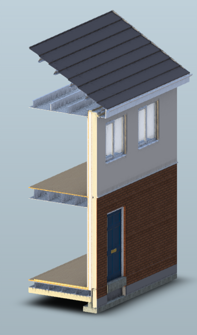

Delivering high quality, low cost housing, from site acquisition through to key handover, using a light gauge steel offsite solution.
By approaching the project differently and using a production based approach we can deliver a high quality housing faster and at lower cost than traditional methods. 
Osco Homes Ltd is a wholly owned subsidiary of Procure Plus Holdings Limited, set up to bring a new, fairer way of developing homes. With a wealth of industry experience in the board of Directors and senior management team, we want to provide the market with houses at a cost directly related to the build cost, not the market opportunity and benefit the economy by directly employing and training locally.
Everyone should be able to afford a home and we will only achieve this by thinking and delivering differently.
We have re-thought how to build a home to incorporate factory precision, reduced wastage and just in time delivery to ensure each project is completed on time and to cost. Every part of the build process is considered, planned, effectively managed and checked for quality on completion.
The process starts with the design, ensuring it is optimised for our approach. The solution is flexible and can produce any style of housing utilising a standard set of components that enable us to control cost and maximise production efficiency. Using 3D CAD, we can convert the completed design straight into component lists and production drawings for site.
All preparation works on the site are completed prior to the first house being delivered. This ensures the works in the ground are completed without disruption and once the houses are on site they can be quickly completed and handed over for occupation.
The houses are built from light gauge steel panels that are assembled in a factory and delivered to site externally complete, including windows and doors. Typically there are four panels per floor which can be quickly fixed together on site to provide a watertight and secure structure.
Osco Homes Limited
Duckworth House, Lancastrian Office Centre, Talbot Road, Old Trafford, Manchester, M32 0FP
Email: info@oscohomes.com
Phone: 0161 874 3141